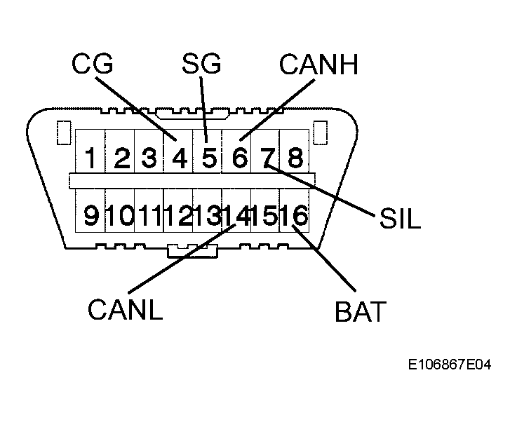

Diagnosis System
- DESCRIPTION
Air conditioning system data and the Diagnostic Trouble Codes (DTCs) can be read through the Data Link Connector 3 (DLC3) of the vehicle. When the system seems to be malfunctioning, use the intelligent tester to check for malfunctions and perform repairs.
- CHECK DLC3
The vehicle's ECM uses the ISO 9141-2 communication protocol. The terminal arrangement of the DLC3 complies with SAE J1962 and matches the ISO 9141-2 format.

Courtesy of © TOYOTA, LICENSE AGREEMENT TMS1002TERMINAL NO. AND SPECIFIED CONDITION CHARTSymbols (Terminal No.) Terminal Description Condition Specified Condition SIL (7) - SG (5) Bus "+" line During transmission Pulse generation CG (4) - Body ground Chassis ground Always Below 1 Ω SG (5) - Body ground Signal ground Always Below 1 Ω BAT (16) - Body ground Battery positive Always 11 to 14 V CANH (6) - CANL (14) HIGH-level CAN bus line Ignition switch OFF 54 to 67 Ω CANH (6) - Battery positive HIGH-level CAN bus line Ignition switch OFF 1 MΩ or higher CANH (6) - CG (4) HIGH-level CAN bus line Ignition switch OFF 3 kΩ or higher CANL (14) - Battery positive LOW-level CAN bus line Ignition switch OFF 1 MΩ or higher CANL (14) - CG (4) LOW-level CAN bus line Ignition switch OFF 3 kΩ or higher If the result is not as specified, the DLC3 may have a malfunction. Repair or replace the harness and connector.
HINT:
Connect the cable of the intelligent tester (with CAN VIM) to the DLC3, turn the ignition switch ON and attempt to use the tester. If the display indicates that a communication error has occurred, there is a problem either with the vehicle or with the tester.
- If communication is normal when the tester is connected to another vehicle, inspect the DLC3 on the original vehicle.
- If communication is still not possible when the tester is connected to another vehicle, the problem may be in the tester itself. Consult the Service Department listed in the tester's instruction manual.